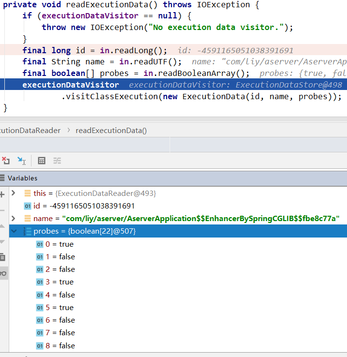
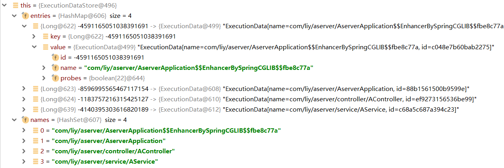
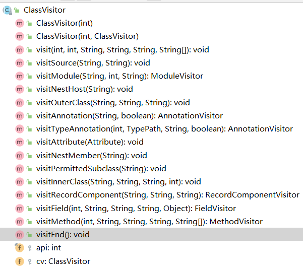
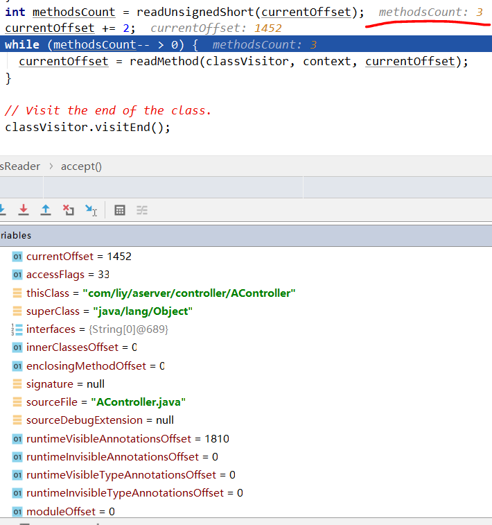
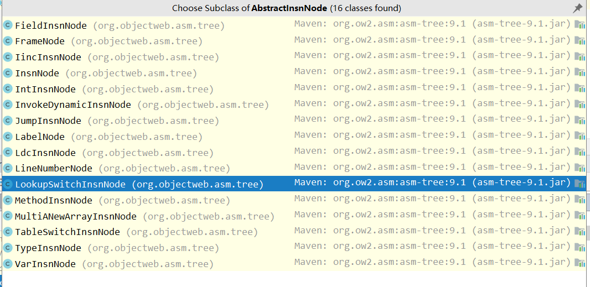
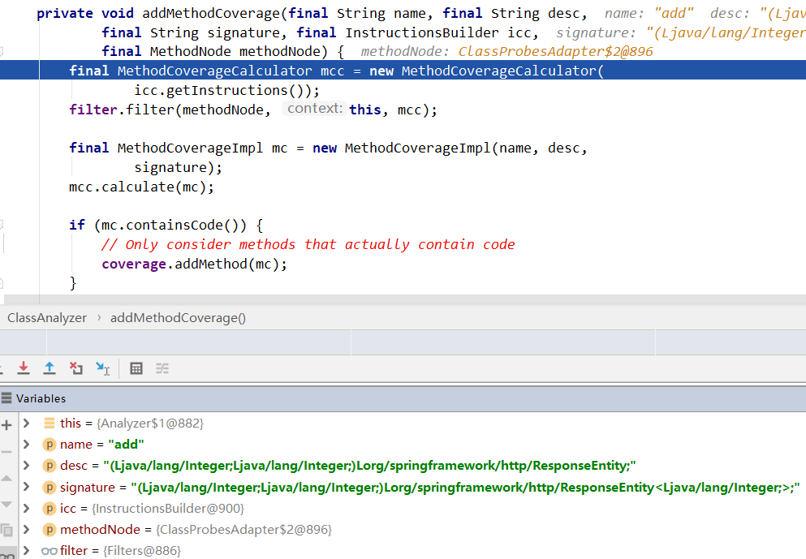
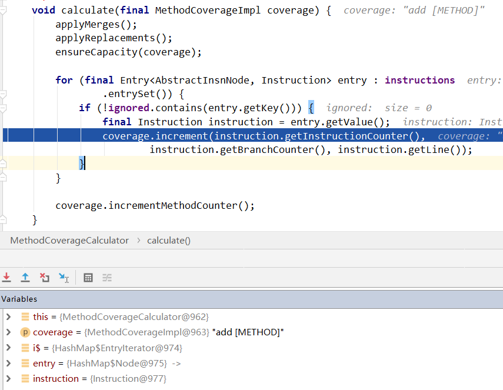
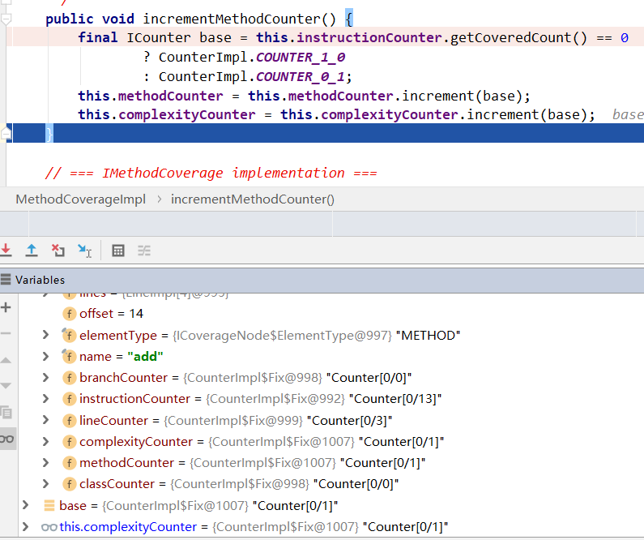
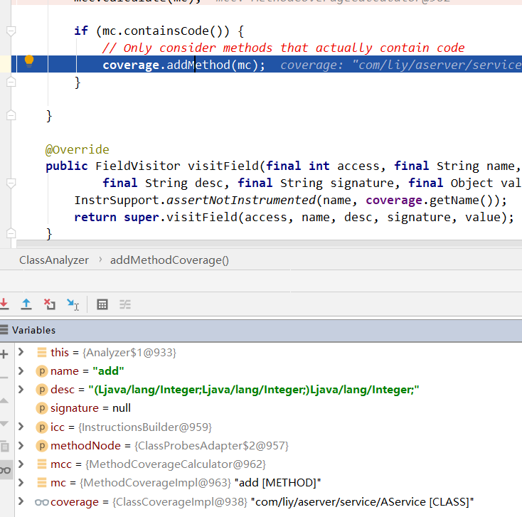

最近在做代码覆盖率相关工作开发，本文对 java 的覆盖率工具 jacoco 解析 exec 数据的流程做一个简单介绍，是通过阅读源码和 debug 的方式来学习。本文将通过 javaagent 的形式使用 jacoco。
jacoco
JaCoCo is a free code coverage library for Java, which has been created by the EclEmma team based on the lessons learned from using and integration existing libraries for many years.
相关资料指路：
jacoco 官网 本文使用的测试项目
项目准备 通过 javaagent 方式使用 jacoco，首先需要转变 javaagent.jar、一个被测试项目、一个使用 jacoco api 生成覆盖率报告的项目。被测试项目这里使用一个简单的 spring boot 服务，提供一个 Controller 和一个 Service。
aserver：被测试项目 配置被测试项目的 JVM 参数，如下：
1 -javaagent=jacocoagent.jar,includes=com.*.*,classdumpdir=[某路径],output=tcpserver,address=127.0.0.1,port=6300
配置完成后，启动被测试项目。之后就可以拉取到 exec 文件了。
1 2 3 4 5 6 7 8 9 10 11 12 13 14 15 16 17 18 19 20 21 22 23 24 25 26 27 28 29 30 31 32 33 @RestController @RequestMapping("aserver/") public class AController @Autowired AService aService; @GetMapping("add.json") public ResponseEntity<Integer> add (@RequestParam Integer p1, @RequestParam Integer p2) return ResponseEntity.ok(aService.add(p1, p2)); } @GetMapping("if-test.json") public ResponseEntity<Boolean> ifTest (@RequestParam Boolean flag) return ResponseEntity.ok(aService.ifTest(flag)); } } @Service public class AService public Integer add (Integer p1, Integer p2) System.out.println(p1); System.out.println(p2); return p1 + p2; } public Boolean ifTest (Boolean flag) if (flag){ System.out.println("flag is true" ); }else { System.out.println("flag is false" ); } return flag; } }
jacoco-analyzer 直接使用的 jacoco 官网提供 api example：
jacoco 数据解析过程 在刚接触 jacoco 时，一直有几个疑问：exec 文件是如何被利用的？为什么必须要使用被测试服务的源码和编译出来的 class 文件？
根据 jacoco 的需要准备材料，如下：
used-classes：被测试项目的 class 文件
used-java：被测试项目的源码文件
jacoco-client.exec：拉取到 exec 文件
下面就根据官网例子提供 ReportGenerator.java 去看看解析过程吧！
ReportGenerator.java 1 2 3 4 5 6 7 8 9 10 11 12 13 14 15 16 17 18 19 20 21 22 23 24 25 26 27 28 29 30 31 32 33 34 35 36 37 38 39 40 41 42 43 44 45 46 47 48 49 50 51 52 53 54 55 56 57 58 59 60 61 62 63 64 65 66 public class ReportGenerator private final String title; private final File executionDataFile; private final File classesDirectory; private final File sourceDirectory; private final File reportDirectory; private ExecFileLoader execFileLoader; public ReportGenerator (final File projectDirectory) this .title = projectDirectory.getName(); this .executionDataFile = new File(projectDirectory, "/test-site/jacoco-client.exec" ); this .classesDirectory = new File(projectDirectory, "/test-site/used-classes" ); this .sourceDirectory = new File(projectDirectory, "/test-site/used-java" ); this .reportDirectory = new File(projectDirectory, "/test-site/coveragereport" ); } public void create () throws IOException loadExecutionData(); final IBundleCoverage bundleCoverage = analyzeStructure(); createReport(bundleCoverage); } private void createReport (final IBundleCoverage bundleCoverage) throws IOException { final HTMLFormatter htmlFormatter = new HTMLFormatter(); final IReportVisitor visitor = htmlFormatter .createVisitor(new FileMultiReportOutput(reportDirectory)); visitor.visitInfo(execFileLoader.getSessionInfoStore().getInfos(), execFileLoader.getExecutionDataStore().getContents()); visitor.visitBundle(bundleCoverage, new DirectorySourceFileLocator(sourceDirectory, "utf-8" , 4 )); visitor.visitEnd(); } private void loadExecutionData () throws IOException execFileLoader = new ExecFileLoader(); execFileLoader.load(executionDataFile); } private IBundleCoverage analyzeStructure () throws IOException final CoverageBuilder coverageBuilder = new CoverageBuilder(); final Analyzer analyzer = new Analyzer( execFileLoader.getExecutionDataStore(), coverageBuilder); analyzer.analyzeAll(classesDirectory); return coverageBuilder.getBundle(title); } public static void main (final String[] args) throws IOException String path = System.getProperty("user.dir" ); final ReportGenerator generator = new ReportGenerator( new File(path)); generator.create(); } }
通过主函数可以看到首先调用了 generator.create() 方法，该方法中将报告的生成分成了 3 步，后续我也根据这 3 步来分别分析。
loadExecutionData：加载 exec 文件 1 2 3 4 5 6 7 private void loadExecutionData () throws IOException execFileLoader = new ExecFileLoader(); execFileLoader.load(executionDataFile); }
很简洁的代码，首先创建一个 exec 文件加载器，然后加载它。
1 2 3 4 5 6 7 8 9 10 11 12 13 14 15 16 17 18 19 20 21 22 23 24 25 26 27 28 29 30 31 32 33 34 35 36 37 38 39 public ExecFileLoader () sessionInfos = new SessionInfoStore(); executionData = new ExecutionDataStore(); } private ISessionInfoVisitor sessionInfoVisitor = null ;private IExecutionDataVisitor executionDataVisitor = null ;public void setSessionInfoVisitor (final ISessionInfoVisitor visitor) this .sessionInfoVisitor = visitor; } public void setExecutionDataVisitor (final IExecutionDataVisitor visitor) this .executionDataVisitor = visitor; } public void load (final File file) throws IOException final InputStream stream = new FileInputStream(file); try { load(stream); } finally { stream.close(); } } public void load (final InputStream stream) throws IOException final ExecutionDataReader reader = new ExecutionDataReader( new BufferedInputStream(stream)); reader.setExecutionDataVisitor(executionData); reader.setSessionInfoVisitor(sessionInfos); reader.read(); }
再进一层，去看看是怎么读取的
1 2 3 4 5 6 7 8 9 10 11 12 13 14 15 16 17 18 19 20 21 22 23 24 25 26 27 28 29 30 31 32 33 34 35 36 37 38 39 40 41 42 43 44 45 46 47 48 49 50 51 52 53 54 55 56 57 58 59 60 61 62 protected final CompactDataInput in;public ExecutionDataReader (final InputStream input) this .in = new CompactDataInput(input); } public boolean read () throws IOException, IncompatibleExecDataVersionException { byte type; do { int i = in.read(); if (i == -1 ) { return false ; } type = (byte ) i; if (firstBlock && type != ExecutionDataWriter.BLOCK_HEADER) { throw new IOException("Invalid execution data file." ); } firstBlock = false ; } while (readBlock(type)); return true ; } protected boolean readBlock (final byte blocktype) throws IOException switch (blocktype) { case ExecutionDataWriter.BLOCK_HEADER: readHeader(); return true ; case ExecutionDataWriter.BLOCK_SESSIONINFO: readSessionInfo(); return true ; case ExecutionDataWriter.BLOCK_EXECUTIONDATA: readExecutionData(); return true ; default : throw new IOException( format("Unknown block type %x." , Byte.valueOf(blocktype))); } } private void readExecutionData () throws IOException if (executionDataVisitor == null ) { throw new IOException("No execution data visitor." ); } final long id = in.readLong(); final String name = in.readUTF(); final boolean [] probes = in.readBooleanArray(); executionDataVisitor .visitClassExecution(new ExecutionData(id, name, probes)); }
下图中可以看到，exec 文件读取时是按类读取的，每个类有三个属性：id、name、probes（探针），其中 probes 存放的是一个 boolean 数组，再结合 jacoco 的插桩知识，可以得出 probes 是指令的覆盖情况，true 代表指令被执行，false 代表指令未执行 。

数据读取之后，将 id、name、probes 三个属性封装进 jacoco 中使用的 ExecutionData，之后又调用了 executionDataVisitor（executionDataVisitor 是 ExecutionDataStore 的对象） 的 visitClassExecution 方法。
1 2 3 4 5 6 7 8 9 10 11 12 13 14 15 16 17 18 19 20 21 22 23 private final Map<Long, ExecutionData> entries = new HashMap<Long, ExecutionData>();private final Set<String> names = new HashSet<String>();public void put (final ExecutionData data) throws IllegalStateException final Long id = Long.valueOf(data.getId()); final ExecutionData entry = entries.get(id); if (entry == null ) { entries.put(id, data); names.add(data.getName()); } else { entry.merge(data); } } public void visitClassExecution (final ExecutionData data) put(data); }
至此，loadExecutionData 步骤执行完毕，最后拥有了一个 executionDataStore 对象，在其之中，存放着每个类的指令覆盖情况 。

analyzeStructure：分析结构 1 2 3 4 5 6 7 8 9 10 11 12 13 14 15 16 17 private IBundleCoverage analyzeStructure () throws IOException final CoverageBuilder coverageBuilder = new CoverageBuilder(); final Analyzer analyzer = new Analyzer( execFileLoader.getExecutionDataStore(), coverageBuilder); analyzer.analyzeAll(classesDirectory); return coverageBuilder.getBundle(title); }
上述代码结构也很清晰，首先创建了一个 CoverageBuilder 对象，然后创建了一个 Analyzer 对象，然后解析，然后返回。
CoverageBuilder：完全解析之后的覆盖率数据就存在这里，按类分好，之后可以通过类名等获取相应内容。
Analyzer：解析器…
简单看下两个类的构造函数：
1 2 3 4 5 6 7 8 9 10 11 12 13 14 15 16 17 public CoverageBuilder () this .classes = new HashMap<String, IClassCoverage>(); this .sourcefiles = new HashMap<String, ISourceFileCoverage>(); } private final ExecutionDataStore executionData;private final ICoverageVisitor coverageVisitor;private final StringPool stringPool;public Analyzer (final ExecutionDataStore executionData, final ICoverageVisitor coverageVisitor) this .executionData = executionData; this .coverageVisitor = coverageVisitor; this .stringPool = new StringPool(); }
正式进入分析数据的过程：analyzer.analyzeAll(classesDirectory)，传入进方法的是一个 File 对象，它本身又是一个文件夹。
1 2 3 4 5 6 7 8 9 10 11 12 13 14 15 16 17 18 19 20 21 22 23 24 25 26 27 28 29 30 31 32 33 34 35 36 37 38 39 40 41 42 43 44 45 46 47 48 49 50 51 52 53 54 55 56 57 58 59 60 61 62 63 64 65 66 67 68 69 70 71 72 73 74 75 76 77 78 79 80 81 82 83 84 85 86 87 88 89 90 91 92 public int analyzeAll (final File file) throws IOException int count = 0 ; if (file.isDirectory()) { for (final File f : file.listFiles()) { count += analyzeAll(f); } } else { final InputStream in = new FileInputStream(file); try { count += analyzeAll(in, file.getPath()); } finally { in.close(); } } return count; } public int analyzeAll (final InputStream input, final String location) throws IOException { final ContentTypeDetector detector; try { detector = new ContentTypeDetector(input); } catch (final IOException e) { throw analyzerError(location, e); } switch (detector.getType()) { case ContentTypeDetector.CLASSFILE: analyzeClass(detector.getInputStream(), location); return 1 ; case ContentTypeDetector.ZIPFILE: return analyzeZip(detector.getInputStream(), location); case ContentTypeDetector.GZFILE: return analyzeGzip(detector.getInputStream(), location); case ContentTypeDetector.PACK200FILE: return analyzePack200(detector.getInputStream(), location); default : return 0 ; } } public void analyzeClass (final InputStream input, final String location) throws IOException { final byte [] buffer; try { buffer = InputStreams.readFully(input); } catch (final IOException e) { throw analyzerError(location, e); } analyzeClass(buffer, location); } public void analyzeClass (final byte [] buffer, final String location) throws IOException { try { analyzeClass(buffer); } catch (final RuntimeException cause) { throw analyzerError(location, cause); } } private void analyzeClass (final byte [] source) final long classId = CRC64.classId(source); final ClassReader reader = InstrSupport.classReaderFor(source); if ((reader.getAccess() & Opcodes.ACC_MODULE) != 0 ) { return ; } if ((reader.getAccess() & Opcodes.ACC_SYNTHETIC) != 0 ) { return ; } final ClassVisitor visitor = createAnalyzingVisitor(classId, reader.getClassName()); reader.accept(visitor, 0 ); }
经过上面几个 analyzeAll 和 analyzeClass 方法可以看出，jacoco 是将对各个类“各自击破”，将要去执行实际的分析过程时，类文件已经变成了字节数组。这最后一个 analyzeClass 方法会去执行实际的分析过程，它首先创建了一个 ClassReader（asm 包中的工具，用来读取和分析类文件），后面分析利用了访问者模式 ，jacoco 创建自己的 visitor 实现自己的逻辑。
asm 包中的 ClassVisitor.java 和 MethodVisitor.java 有很多“钩子”可以重写，jacoco 这里主要重写了 visitEnd 方法，来实现对 Class 和 Method 的访问。
访问流程还是通过阅读代码来跟进，在阅读源码之前有几个问题需要注意下：
经过 loadExecutionData 方法，exec 文件中的指令覆盖情况已经被记录到 executionDataStore 对象中了，但是只知道指令的覆盖情况，怎么知道行的情况、分支的情况、类的情况？换句话说 jacoco 怎么将指令的覆盖情况合并为更具体的覆盖情况？
下面继续阅读代码，首先回到 jacoco 创建 visitor 的方法。
1 2 3 4 5 6 7 8 9 10 11 12 13 14 15 16 17 18 19 20 21 22 23 24 25 26 27 28 29 30 31 32 33 34 35 36 37 38 private ClassVisitor createAnalyzingVisitor (final long classid, final String className) final ExecutionData data = executionData.get(classid); final boolean [] probes; final boolean noMatch; if (data == null ) { probes = null ; noMatch = executionData.contains(className); } else { probes = data.getProbes(); noMatch = false ; } final ClassCoverageImpl coverage = new ClassCoverageImpl(className, classid, noMatch); final ClassAnalyzer analyzer = new ClassAnalyzer(coverage, probes, stringPool) { @Override public void visitEnd () super .visitEnd(); coverageVisitor.visitCoverage(coverage); } }; return new ClassProbesAdapter(analyzer, false ); }
到目前为止，出现的类已经比较多了，又是适配器又是访问者，jacoco 这里的水还是很深的，但是我先不关注其他的地方，还是以数据分析过程为主题去看，后面出一个 jacoco 数据分析相关类的关系图。话不多说，终于该进入到 ClassReader 了。
（ClassAnalyzer、ClassProbesAdpater、ClassVisitor的关系，先欠着）
ClassReader 中的 accept 方法接受一个 visitor（需要继承 asm 中的 ClassVisitor，ClassVisitor 是一个抽象类），visitor 可以通过重写 ClassVisitor 的方法来实现一些逻辑，ClassVisitor 中定义的方法有：

ClassVisitor 中具有两个属性，api 和 ClassVisitor 对象，并且在它的 visitXXX 方法中，都会判断 ClassVisitor 对象是不是 null，如果不是 null 则调用其相应的方法。如：
1 2 3 4 5 6 7 8 9 10 11 12 13 14 15 16 17 18 19 20 21 22 23 24 25 public void visitEnd () if (cv != null ) { cv.visitEnd(); } } public ClassProbesAdapter (final ClassProbesVisitor cv, final boolean trackFrames) super (InstrSupport.ASM_API_VERSION, cv); this .cv = cv; this .trackFrames = trackFrames; }
ClassReader 的 accept 中会执行一些逻辑，这里也不详写，目前只知道在这个方法中可以得到当前类中有几个方法…
1 2 3 4 5 6 7 8 9 10 11 12 13 14 15 16 17 18 19 20 21 22 public void accept (final ClassVisitor classVisitor, final int parsingOptions) accept(classVisitor, new Attribute[0 ], parsingOptions); } public void accept (final ClassVisitor classVisitor, final Attribute[] attributePrototypes, final int parsingOptions) int methodsCount = readUnsignedShort(currentOffset); currentOffset += 2 ; while (methodsCount-- > 0 ) { currentOffset = readMethod(classVisitor, context, currentOffset); } classVisitor.visitEnd(); }
通过下图可以看到，在 AController 中 methodCounts 是 3（这里有一个疑问，在 AController 中明明我只写两个方法，为什么 methodCounts 会是 3 呢…这里发现每个类都有一个名字是 <init> 的方法，这里先不考虑）

readMethod 方法的注释是这样写的：“Reads a JVMS method_info structure and makes the given visitor visit it.”，意思就是“读取JVMS方法信息结构，并让给定的访问者访问它”，在这个方法中将会创建一个 MethodVisitor，以此来访问方法。
1 2 3 4 5 6 7 8 9 10 11 12 13 14 15 16 17 18 19 20 21 22 23 24 25 26 27 28 29 30 31 32 33 34 35 36 37 38 39 40 41 42 43 44 45 46 47 48 49 50 51 52 53 54 55 56 57 58 59 60 61 62 63 64 65 66 67 68 69 70 71 72 73 74 75 76 77 78 79 80 81 82 83 84 85 86 87 88 89 private int readMethod (final ClassVisitor classVisitor, final Context context, final int methodInfoOffset) MethodVisitor methodVisitor = classVisitor.visitMethod( context.currentMethodAccessFlags, context.currentMethodName, context.currentMethodDescriptor, signatureIndex == 0 ? null : readUtf(signatureIndex, charBuffer), exceptions); methodVisitor.visitEnd(); return currentOffset; } @Override public final MethodVisitor visitMethod (final int access, final String name, final String desc, final String signature, final String[] exceptions) final MethodProbesVisitor methodProbes; final MethodProbesVisitor mv = cv.visitMethod(access, name, desc, signature, exceptions); if (mv == null ) { methodProbes = EMPTY_METHOD_PROBES_VISITOR; } else { methodProbes = mv; } return new MethodSanitizer(null , access, name, desc, signature, exceptions) { @Override public void visitEnd () super .visitEnd(); LabelFlowAnalyzer.markLabels(this ); final MethodProbesAdapter probesAdapter = new MethodProbesAdapter( methodProbes, ClassProbesAdapter.this ); if (trackFrames) { final AnalyzerAdapter analyzer = new AnalyzerAdapter( ClassProbesAdapter.this .name, access, name, desc, probesAdapter); probesAdapter.setAnalyzer(analyzer); methodProbes.accept(this , analyzer); } else { methodProbes.accept(this , probesAdapter); } } }; } private final ClassCoverageImpl coverage;private final boolean [] probes;private final StringPool stringPool;@Override public MethodProbesVisitor visitMethod (final int access, final String name, final String desc, final String signature, final String[] exceptions) InstrSupport.assertNotInstrumented(name, coverage.getName()); final InstructionsBuilder builder = new InstructionsBuilder(probes); return new MethodAnalyzer(builder) { @Override public void accept (final MethodNode methodNode, final MethodVisitor methodVisitor) super .accept(methodNode, methodVisitor); addMethodCoverage(stringPool.get(name), stringPool.get(desc), stringPool.get(signature), builder, methodNode); } }; }
经过上述代码后可以知道 ClassReader 中 readMethod 方法会调用传入的 classVisitor 对象的 visitMethod 方法来获取一个 MethodVisitor 对象，在 readMethod 方法中获取到 MethodVisitor 对象实际是一个 MethodSanitizer 对象，它重写了 visitEnd 方法。在其重写的 visitEnd 方法中它又会执行 methodProbes.accept() 的方法，这个 methodProbes 对象是一个 MethodAnalyzer 的实例，所以当执行 methodProbes.accept 时，会执行 MethodAnalyzer 中重写的 accept 方法。
下面继续回到 readMethod 方法中，当执行到最后时，调用了 methodVisitor.visitEnd 方法，调用链如下：
MethodSanitizer.visitEnd -> MethodAnalyzer.accept
1 2 3 4 5 6 7 8 9 10 11 12 13 14 15 16 17 18 @Override public void accept (final MethodNode methodNode, final MethodVisitor methodVisitor) methodVisitor.visitCode(); for (final TryCatchBlockNode n : methodNode.tryCatchBlocks) { n.accept(methodVisitor); } for (final AbstractInsnNode i : methodNode.instructions) { currentNode = i; i.accept(methodVisitor); } methodVisitor.visitEnd(); }
在 MethodAnalyzer 中 accept 方法可以看到，这里将指令分别处理了。会首先调用 AbstractInsnNode 的 accept 方法，各种类型的 AbstractInsnNode 的 accept 方法又有不同，下面看下 AbstractInsnNode 的种类有哪些：

它们中的 accept 方法的逻辑举例：
1 2 3 4 5 6 7 8 9 10 11 12 13 14 15 16 17 18 19 20 21 22 23 @Override public void accept (final MethodVisitor methodVisitor) methodVisitor.visitMethodInsn(opcode, owner, name, desc, itf); acceptAnnotations(methodVisitor); } @Override public void accept (final MethodVisitor methodVisitor) methodVisitor.visitLabel(getLabel()); } @Override public void accept (final MethodVisitor methodVisitor) methodVisitor.visitInsn(opcode); acceptAnnotations(methodVisitor); }
发现各种类型的指令首先还是会调用 MethodVisitor 对象的 visitXXX 方法，那么就看下这里将会调用的实际逻辑吧
1 2 3 4 5 6 7 8 9 10 11 12 13 14 15 16 17 18 19 20 21 22 23 24 25 26 27 28 29 30 31 32 33 34 35 36 37 38 39 40 41 42 43 private final InstructionsBuilder builder; @Override public void visitLabel (final Label label) builder.addLabel(label); } @Override public void visitLineNumber (final int line, final Label start) builder.setCurrentLine(line); } @Override public void visitInsn (final int opcode) builder.addInstruction(currentNode); } @Override public void visitProbe (final int probeId) builder.addProbe(probeId, 0 ); builder.noSuccessor(); } @Override public void visitJumpInsnWithProbe (final int opcode, final Label label, final int probeId, final IFrame frame) builder.addInstruction(currentNode); builder.addProbe(probeId, 1 ); } @Override public void visitInsnWithProbe (final int opcode, final int probeId) builder.addInstruction(currentNode); builder.addProbe(probeId, 0 ); }
执行到这里可以知道，jacoco 在解析类时，会先解析类中的方法，在解析方法时又是从组成方法的指令出发。在遍历 methodNode.instructions 时发现，当在解析一个方法时，前面两个指令分别是 LabelNode 和 LineNumberNode。（LineNumberNode 可以将 InstructionBuilder 中的 currentLine 置为当前的行）
1 2 3 4 5 6 7 8 9 10 11 12 13 14 15 16 17 18 19 20 21 22 23 24 25 26 27 28 29 30 31 32 33 34 35 36 37 38 39 40 41 42 43 44 45 46 47 48 49 50 51 52 53 54 55 56 57 58 59 60 61 62 63 64 65 66 67 68 69 70 71 72 73 74 75 76 77 78 79 80 81 private final boolean [] probes;private int currentLine;private Instruction currentInsn;private final Map<AbstractInsnNode, Instruction> instructions;private final List<Label> currentLabel;void addInstruction (final AbstractInsnNode node) final Instruction insn = new Instruction(currentLine); final int labelCount = currentLabel.size(); if (labelCount > 0 ) { for (int i = labelCount; --i >= 0 ;) { LabelInfo.setInstruction(currentLabel.get(i), insn); } currentLabel.clear(); } if (currentInsn != null ) { currentInsn.addBranch(insn, 0 ); } currentInsn = insn; instructions.put(node, insn); } void addProbe (final int probeId, final int branch) final boolean executed = probes != null && probes[probeId]; currentInsn.addBranch(executed, branch); } private final int line;private int branches;private final BitSet coveredBranches;private Instruction predecessor;private int predecessorBranch;public void addBranch (final boolean executed, final int branch) branches++; if (executed) { propagateExecutedBranch(this , branch); } } private static void propagateExecutedBranch (Instruction insn, int branch) while (insn != null ) { if (!insn.coveredBranches.isEmpty()) { insn.coveredBranches.set(branch); break ; } insn.coveredBranches.set(branch); branch = insn.predecessorBranch; insn = insn.predecessor; } } public ICounter getInstructionCounter () return coveredBranches.isEmpty() ? CounterImpl.COUNTER_1_0 : CounterImpl.COUNTER_0_1; }
在经过了 Method.accept 之后，类中的一个方法的每个指令就与 exec 文件中的覆盖情况结合了。然后会继续执行 ClassAnalyzer 的 addMethodCoverage 方法。
1 2 3 4 5 6 7 8 9 10 11 12 13 14 15 16 17 18 19 private void addMethodCoverage (final String name, final String desc, final String signature, final InstructionsBuilder icc, final MethodNode methodNode) final MethodCoverageCalculator mcc = new MethodCoverageCalculator( icc.getInstructions()); filter.filter(methodNode, this , mcc); final MethodCoverageImpl mc = new MethodCoverageImpl(name, desc, signature); mcc.calculate(mc); if (mc.containsCode()) { coverage.addMethod(mc); } }
下图是展示 name、desc、signature：

下图是展示 calculate 的实际逻辑，下图的 coverage 对象是 Method 级别的对象，是记录整个 Method 的覆盖情况的。再往下调用的 coverage.increment 方法其实做的是将指令级别的数据累加到方法上，如将方法中所有指令的 missed 相加，就是方法的 missed，将所有执行的 covered 相加，就是方法的 covered。

上图中最后调用的 coverage.incrementMethodCounter() 也是对方法覆盖情况的一个总结，具体逻辑如下图：

到这里为止，整个分析的流程就快要结束了，这里是针对方法级别的数据累加，当执行完 calculate 方法后，又会执行一个 coverage.addMethod(mc)，这里的 coverage 对象是类级别的对象，再往下执行就是将方法级别的数据累加到类上。

如此如此，这般这般之后，发现 jacoco 中每个类的覆盖率数据是由指令的数据累加来的，这篇文章中最后也只得出了这个结论，在跟随源码的过程中了解到了数据走向，但是对 class 文件中的指令和 exec 文件中指令的覆盖情况结合的逻辑还不是特别清晰，这里就先粗略的理解。同时在跟进源码时发现，还需要对工具的数据结构和设计模式加强理解，比如 Instruction 处应该是使用了链表；访问者模式；适配器模式等等。之后在工作中如果有需要再来阅读代码，这篇文章的目的是先了解 jacoco 分析数据的思路。📚